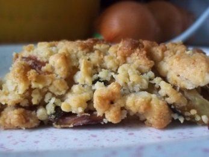

Crumble courgettes chèvre
Ingredients
4×
- huile
- 1 oignon
- 4 courgettes
- 100 g de lardons ou chorizo
- 80 g de beurre
- 100 g de farine
- 100 g de parmesan
- 150 g de chèvre

Préparation
Étape 1
Chauffer un peu d’huile dans un faitout. Ajouter 1 oignon et 4 courgettes en fines rondelles. Quand ils commencent à dorer, ajouter 100 g de lardons ou chorizo et laisser mijoter 15 à 20min à feu doux.
Étape 2
Sabler 80 g de beurre, 100 g de farine et 100 g de parmesan.
Étape 3
Verser les légumes dans un plat, parsemer de 150 g de chèvre en morceaux et recouvrir de crumble.
Étape 4
Cuire 25min à 210ºC.
Conseils
- Variante : remplacer les courgettes par 400g de poireaux à la crème.